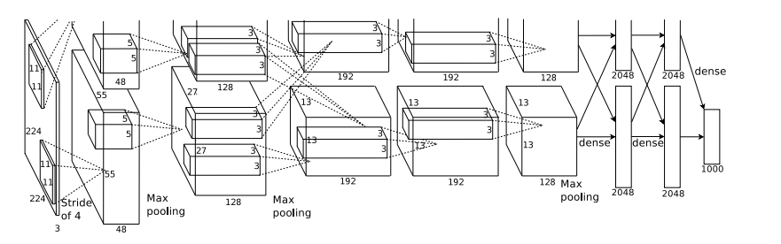
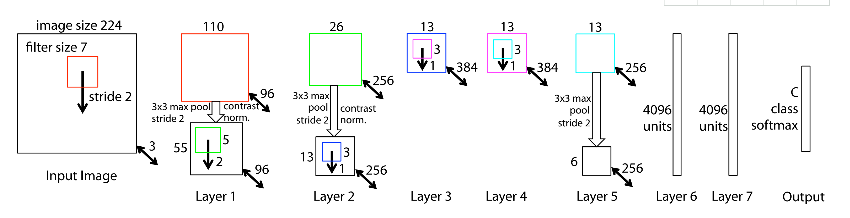
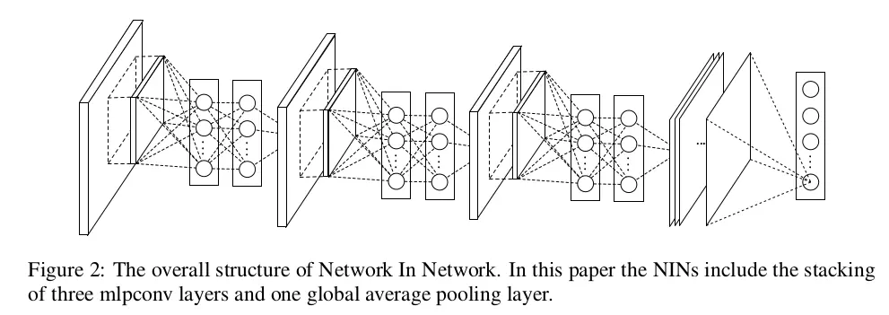
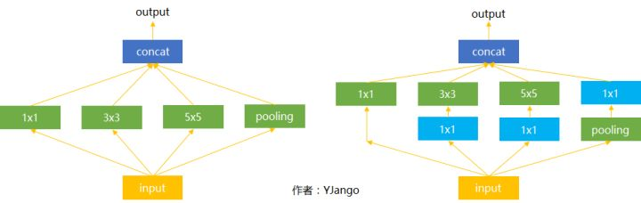

前言
卷积神经网络可谓是现在深度学习领域中大红大紫的网络框架，尤其在计算机视觉领域更是一枝独秀。CNN从90年代的LeNet开始，21世纪初沉寂了10年，直到12年AlexNet开始又再焕发第二春，从ZF Net到VGG，GoogLeNet再到ResNet和最近的DenseNet，网络越来越深，架构越来越复杂，解决反向传播时梯度消失的方法也越来越巧妙。本文针对过往一些主流CNN网络架构进行总结。
本文将会谈及到以下经典的卷积神经网络：
- LeNet
- AlexNet
- ZF
- VGG
- Network in Network
- GoogLeNet(Inception-v1/v2/v3/v4)
- ResNet
- DenseNet
1.开山之作：LeNet

LeNet是卷积神经网络的祖师爷LeCun在1998年提出，用于解决手写数字识别的视觉任务。自那时起，CNN的最基本的架构就定下来了：卷积层、池化层、全连接层。如今各大深度学习框架中所使用的LeNet都是简化改进过的LeNet-5（-5表示具有5个层），和原始的LeNet有些许不同，比如把激活函数改为了现在很常用的ReLu。
LeNet-5跟现有的conv->pool->ReLU的套路不同，它使用的方式是conv1->pool->conv2->pool2再接全连接层，但是不变的是，卷积层后紧接池化层的模式依旧不变。

2.王者归来：AlexNet
AlexNet在2012年ImageNet竞赛中以超过第二名10.9个百分点的绝对优势一举夺冠，从此深度学习和卷积神经网络名声鹊起，深度学习的研究如雨后春笋般出现，AlexNet的出现可谓是卷积神经网络的王者归来。

闪光点：
- 更深的网络
以上图AlexNet架构为例，这个网络前面5层是卷积层，后面三层是全连接层，最终softmax输出是1000类。层数比LeNet多了不少，但卷积神经网络总的流程并没有变化，只是在深度上加了不少。 - 数据增广
AlexNet针对的是1000类的分类问题，输入图片规定是256×256的三通道彩色图片，为了增强模型的泛化能力，避免过拟合，作者使用了随机裁剪的思路对原来256×256的图像进行随机裁剪，得到尺寸为3×224×224的图像，输入到网络训练。
- 多GPU训练（结构上双分支）
- ReLu
最后一层的激活函数，由LeNet的Sigmoid改为ReLu加快随机梯度下降的收敛速度。 - Dropout
缓解过拟合 - LRN
对局部神经元的活动创建竞争机制，使得其中响应比较大的值变得相对更大，并抑制其他反馈较小的神经元，增强了模型的泛化能力。
3.稳步前行：ZF-Net
ZFNet是2013ImageNet分类任务的冠军，其网络结构没什么改进，只是调了调参，性能较Alex提升了不少。ZF-Net只是将AlexNet第一层卷积核由11变成7，步长由4变为2，第3，4，5卷积层转变为384，384，256。这一年的ImageNet还是比较平静的一届，其冠军ZF-Net的名堂也没其他届的经典网络架构响亮。

4.越走越深：VGG-Nets
VGG-Nets是由牛津大学VGG（Visual Geometry Group）提出，是2014年ImageNet竞赛定位任务的第一名和分类任务的第二名的中的基础网络。VGG可以看成是加深版本的AlexNet. 都是conv layer + FC layer。
优点：VGG采用的是一种Pre-training的方式，这种方式在经典的神经网络中常见得到，就是先训练一部分小网络，然后再确保这部分网络稳定之后，再在这基础上逐渐加深。下表从左到右体现的就是这个过程，并且当网络处于D阶段的时候，效果是最优的，因此D阶段的网络也就是VGG-16了！E阶段得到的网络就是VGG-19了！VGG-16的16指的是conv+fc的总层数是16，是不包括max pool的层数！使用更小的卷积核3X3,1X1,3X3减小计算参数，1X1减小输入维度，同时都增加了非线性。


从上图看出，VGG网络filter的个数（卷积后的输出通道数）从64开始，然后没接一个pooling后其成倍的增加，128、512，VGG的注意贡献是使用小尺寸的filter，及有规则的卷积-池化操作。
闪光点：
- 卷积层使用更小的尺寸
- 3×3卷积核的优点：
- 多个3×3的卷基层比一个大尺寸filter卷基层有更多的非线性，使得判决函数更加具有判决性
- 多个3×3的卷积层比一个大尺寸的filter有更少的参数，假设卷基层的输入和输出的特征图大小相同为C，那么三个3×3的卷积层参数个数3×（3×3×C×C）=27CC；一个7×7的卷积层参数为49CC；所以可以把三个3×3的filter看成是一个7×7filter的分解（中间层有非线性的分解）
- 1*1卷积核的优点：
- 升降维：比如，一张500 * 500且厚度depth为100 的图片在20个filter上做11的卷积，那么结果的大小为500500*20。
- 加入非线性：卷积层之后经过激励层，1*1的卷积在前一层的学习表示上添加了非线性激励（ non-linear activation ），提升网络的表达能力；
- 3×3卷积核的优点：
5.端到端：Network in Network
优点：
- 数据处理，随机裁剪等；
- 使用好的激活函数，relu替换sigmoid，防止过拟合采用dropout，lrn，卷积核变小减少计算量和参数，增加非线性，采用1X1减少维度，
- 加速训练分组训练；
- 使用全局平均池化层代替全连接
全连接的目的是什么呢？因为传统的网络我们的输出都是分类，也就是几个类别的概率甚至就是一个数–类别号，那么全连接层就是高度提纯的特征了，方便交给最后的分类器或者回归。
但是全连接的参数太多了，所以现在的趋势是尽量避免全连接，近期的大部分论文FC多用全局平均池化层（GAP，Global Average Pooling）的方法代替。后者的思想就是：用 feature map 直接表示属于某个类的 confidence map，比如有10个类，就在最后输出10个 feature map，每个feature map中的值加起来求平均值，这十个数字就是对应的概率或者叫置信度。然后把得到的这些平均值直接作为属于某个类别的 confidence value，再输入softmax中分类， 更重要的是实验效果并不比用 FC 差。
关于Network in Network的解释参考以下链接[link]

6.大浪推手：GoogLeNet
优点：
使用Network in Network中1x1 conv及AvgPool替换fc引入inception模块
想通过一种spared layer architecture来实现较优的多维度特征表达，然后通过对这种结构进行叠加，中间不时再插入一些MaxPool层以减少参数数目（从而节省内存与计算开销）。具体来说，就是将CNN中常用的卷积（1x1，3x3，5x5）、池化操作（3x3）堆叠在一起（卷积、池化后的尺寸相同，将通道相加），一方面增加了网络的宽度，另一方面也增加了网络对尺度的适应性。
输入（可以是被卷积完的长方体输出作为该层的输入）进来后，通常可以选择直接使用像素信息(1x1卷积)传递到下一层，可以选择3x3卷积，可以选择5x5卷积，还可以选择max pooling对刚被卷积后的特征图降采样。但在实际的网络设计中，究竟该如何选择需要大量的实验和经验。Inception就不用我们来选择，而是将4个选项给神经网络，让网络自己去选择最合适的解决方案。上图结构就是Inception，结构里的卷积stride都是1，另外为了保持特征响应图大小一致，都用了零填充。最后每个卷积层后面都立刻接了个ReLU层。在输出前有个叫concatenate的层，直译的意思是“并置”，即把4组不同类型但大小相同的特征响应图一张张并排叠起来，形成新的特征响应图。
7.坚持可持续性发展：Inception-v1/v2/v3/v4
这四个网络都是对Inception结构进行调整。
8.里程碑式创新：ResNet
2015年何恺明推出的ResNet在ISLVRC和COCO上横扫所有选手，获得冠军。ResNet在网络结构上做了大创新，而不再是简单的堆积层数，ResNet在卷积神经网络的新思路，绝对是深度学习发展历程上里程碑式的事件。详解参见该链接[link]。
当卷积网络层数增加的同时容易引发梯度消失或梯度爆炸问题，ResNet的主要思想是在网络中增加了直连通道，即Highway Network的思想。此前的网络结构是性能输入做一个非线性变换，而Highway Network则允许保留之前网络层的一定比例的输出。ResNet的思想和Highway Network的思想也非常类似，允许原始输入信息直接传到后面的层中，如下图所示。可以直接学习输入和输出的差值F(x)


优点：
层数已经非常深，超过百层引入残差单元来解决退化问题
9.继往开来：DenseNet
优点：有效地复用各layers之间的feature map计算，从而减少每层需用的训练参数。
自Resnet提出以后，ResNet的变种网络层出不穷，都各有其特点，网络性能也有一定的提升。本文介绍的最后一个网络是CVPR 2017最佳论文DenseNet，论文中提出的DenseNet（Dense Convolutional Network）主要还是和ResNet及Inception网络做对比，思想上有借鉴，但却是全新的结构，网络结构并不复杂，却非常有效，在CIFAR指标上全面超越ResNet。可以说DenseNet吸收了ResNet最精华的部分，并在此上做了更加创新的工作，使得网络性能进一步提升。